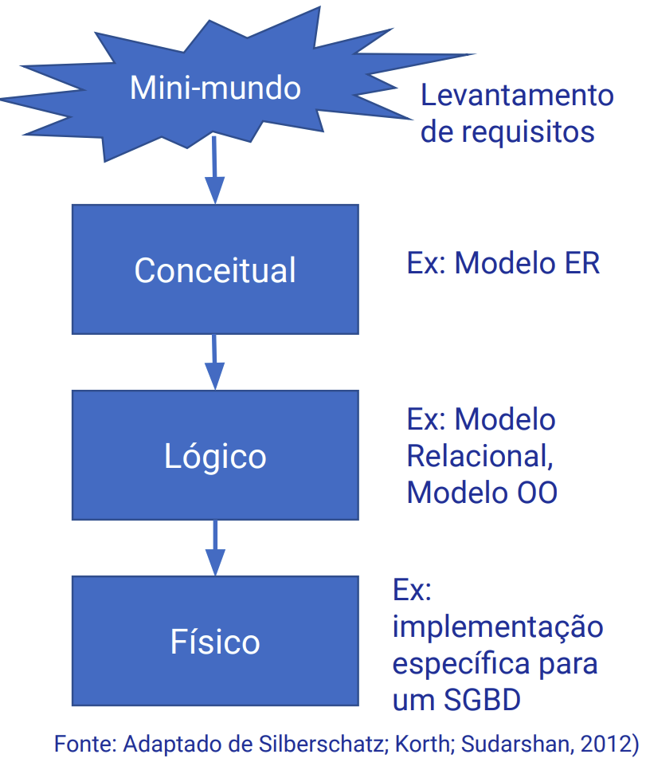
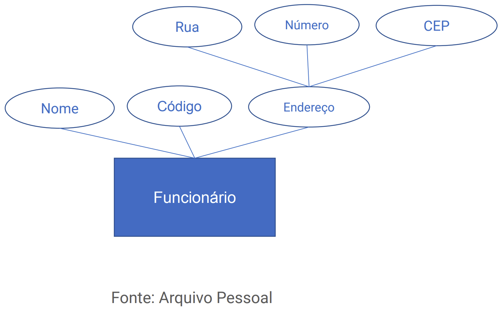
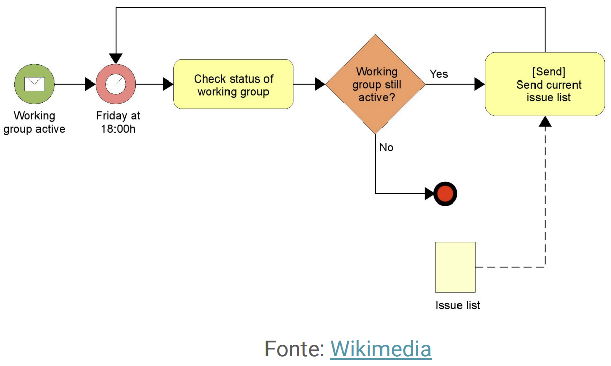

Disciplinas
SISTEMAS DE INFORMAÇÃO Concluído
Materiais
Vídeo 1 - [UFMS Digital] Sistemas de Informação - Módulo 3 - Unidade 1 - Modelos de dados e de informação e armazenagem e processamento em nuvem sendProf° ministrante: Awdren de Lima Fontão
Dado
Representação simbólica de fatos ou conceitos em uma forma adequada para processamento, geralmente em formato numérico, alfabético ou alfanumérico.
Elemento bruto que, quando organizado e processado, fornece significado e contexto, transformando-se em informação.
Modelo
Um modelo em Sistemas de Informação é uma representação simplificada e abstrata de um sistema, processo ou conjunto de dados, que captura aspectos essenciais para análise, compreensão e tomada de decisões.
Essas representações podem incluir diferentes tipos de modelos: modelos conceituais, modelos físicos, modelos matemáticos, e outros, dependendo do objetivo específico da modelagem.
Modelo de dados
- Uma característica fundamental do uso de banco de dados é a abstração dos dados.
- Ocultando os detalhes de armazenamento.
- Para isso, é criado um modelo de dados:
- Conjunto de conceitos que podem ser usados para descrever a estrutura de um banco de dados.
- Fornece o significado necessário para permitir essa abstração.
Fases de um modelo
Existem várias propostas para representar um modelo de dados. Podemos classificá-los de acordo com os conceitos usados para descrever a estrutura do banco de dados:
Modelos conceituais ou alto nível: descrevem a estrutura de um banco de dados de acordo com a percepção dos usuários independentes de aspectos de implementação.
Modelos representativos (lógicos): descrevem a estrutura de um banco de dados da forma como será manipulado pelo SGBD mais dependentes de aspectos de implementação.
Modelos físicos ou baixo nível: descrevem a estrutura de um banco de dados da forma como os dados são fisicamente armazenados totalmente dependentes de aspectos de implementação (registros, blocos, índices, etc.).

Modelo Entidade-Relacionamento
Esse modelo utiliza entidades para representar objetos no mundo real e relações para descrever como essas entidades estão conectadas.
Entidade 🢀🢂 Representa um objeto ou conceito do mundo real
Atributo 🢀🢂 Representa alguma propriedade de interesse. Descreve melhor uma entidade.
Relacionamentos 🢀🢂 Representa uma associação entre as entidades

Modelo de Informação
Representação estruturada que descreve a organização, o formato, o significado e as inter-relações dos dados e informações em um sistema.
Esse modelo é projetado para fornecer uma visão abstrata e compreensível das informações relevantes para apoiar a tomada de decisões, processos de negócios e outras atividades dentro de uma organização.
- Vamos ver um exemplo, em um modelo de processo de negócios.
Descreve as atividades einterações envolvidas nosprocessos de negócios deuma organização, incluindoinformações relevantespara cada etapa.

Armazenagem
Processo de retenção, organização e gerenciamento de dados de maneira a permitir a recuperação eficiente, a integridade dos dados e o suporte às operações do sistema.
Armazenagem em Nuvem
Em vez de armazenar dados localmente em discos rígidos ou outros dispositivos físicos, o armazenamento em nuvem permite que os usuários armazenem e acessem dados remotamente por meio de servidores online.
- A definição em nuvem refere-se à ideia de que os dados não estão restritos a um local físico específico, mas são acessados pela internet a partir de diversos dispositivos.
Alguns benefícios
Acessibilidade Remota: Os dados armazenados na nuvem podem ser acessados de qualquer lugar com conexão à internet, proporcionando maior flexibilidade e mobilidade aos usuários.
Elasticidade: Os serviços de armazenamento em nuvem geralmente oferecem escalabilidade, permitindo que os usuários aumentem ou diminuam a quantidade de armazenamento conforme necessário.
Compartilhamento de Dados: Facilita o compartilhamento de dados e colaboração entre usuários, pois muitos serviços de nuvem permitem compartilhamento fácil e seguro de arquivos.
Processamento em nuvem
Refere-se à execução de tarefas computacionais utilizando recursos remotos disponibilizados pela internet;
Não depende exclusivamente de recursos computacionais locais, como servidores físicos ou estações de trabalho;
As organizações podem aproveitar serviços de processamento em nuvem para executar, processar e gerenciar seus aplicativos e dados. Isso proporciona flexibilidade, escalabilidade e acessibilidade remota.
Modelos de serviço em nuvem para processamento.
IaaS (Infraestrutura como Serviço): fornece acesso virtualizado a recursos de infraestrutura, como máquinas virtuais, redes e armazenamento;
PaaS (Plataforma como Serviço): oferece uma plataforma de desenvolvimento completa na nuvem, incluindo ferramentas e serviços para facilitar o desenvolvimento, teste e implantação de aplicativos;
SaaS (Software como Serviço): fornece aplicativos de software hospedados na nuvem, acessíveis através de um navegador da web, sem a necessidade de instalação local.